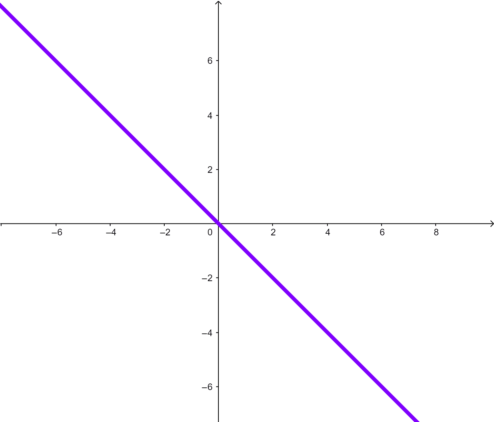

Título de la obra:
Función Lineal
Autor:
Laura Reinoso
Código JavaScript para el libro: Joel Espinosa Longi, IMATE, UNAM.
Recursos interactivos: DescartesJS
Fuentes: Lato y UbuntuMono
Fórmulas matemáticas: $\KaTeX$
LICENCIA
 Creative Commons Attribution License 4.0.
Creative Commons Attribution License 4.0.
Tabla de contenido
Definición de Función Lineal
Definición de Función Lineal
Son funciones cuyo dominio y rango son un subconjunto del conjunto de los Reales.
En ellos la tasa de variación es constante
Se puede representar matemáticamente mediante la fórmula: $f(x)=mx+b$ ; con $m$ , $b$ pertenecientes a los números Reales.
También se puede representar matemáticamente mediante la ecuación: $y=mx+b$ ; con $m$ , $b$ pertenecientes a los números Reales.
EjemploA continuación se observa diferentes funciones lineales en el gif, representadas en un plano cartesiano:
Conceptos
Conceptos
Nota
Recordemos que las funciones son un tipo de relación especial. Por lo tanto, los conceptos clave siguen siendo iguales
Dominio: Es el conjunto de todos los elementos que hacen parte del conjunto de partida y se encuentran relacionados.
Rango: Es el conjunto de todos los elementos que hacen parte del conjunto de llegada y se encuentran relacionados.
Imagen: Cada elemento $x$ que hace parte del dominio tiene una relación con un elemento en el conjunto de llegada a quien se le llama imagen de $x$.
Preimagen: Cada elemento $y$ que hace parte del rango tiene una relación con un elemento en el conjunto de partida a quien se le llama preimagen de $y$.
Conjunto de partida: Se identifica en el diagrama sagital por ser el conjunto del que salen las flechas. En el plano cartesiano, va a determinar el eje $x$. En la tabla va a ser la columna de la izquierda o de la variable independiente. En la fórmula generalmente se le nombra con la letra $x$.
Conjunto de llegada: Se identifica en el diagrama sagital por ser el conjunto al que llegan las flechas. En el plano cartesiano, va a determinar el eje $y$. En la tabla va a ser la columna de la derecha o de la variable dependiente. En la fórmula generalmente se le nombra con la letra $y$.
Identificación de una Función Lineal
¿Cómo saber que una función es lineal o no?
Dependiendo de la representación que tengas, o de los datos suministrados, o de la correcta interpretación de una situación puedes identificar que una función es o no lineal si las variables a relacionar son $x$ y $y$ , y la tasa de variación $∆y \over ∆x$ se mantiene constante.
Ejemplo 1Un carro realiza el movimiento descrito a continuación por el applet.
Haga clic en los botones para interactuar con el applet.
Se requiere determinar si las variables tiempo y distancia recorrida se relacionan mediante la función lineal y si es así determinar su ecuación.
Pasos
1. Se determina quien es la variable dependiente y cual la independiente, en este caso el tiempo es independiente y la posición es la variable dependiente. Ambas variables pertenecen al conjunto de los números reales positivos.
2. Se realiza una tabla con algunos datos.
| Tiempo(s) | Posición(m) |
| 0 | 4 |
| 3 | 6 |
| 6 | 8 |
| 9 | 10 |
3. Se toman varias parejas de puntos y se determina su tasa de variación. Si es la misma entonces la función es lineal y la tasa de variación será la pendiente de la recta.
Para este caso la tasa de variación es:
$$Δx \over Δt $$
Siendo $Δx$ como el cambio en la posición y $Δt$ como el cambio en el tiempo
Analicemos las parejas (0,4) y (3,6).
$${Δx \over Δt} = {6-4 \over 3-0 }$$
$${Δx \over Δt} = {2 \over 3 }$$
Analicemos las parejas (3,6) y (6,8)
$${Δx \over Δt} = {8-6 \over 6-3 }$$
$${Δx \over Δt} = {2 \over 3 }$$
Analicemos las parejas Parejas (6,8) y (9,10)
$${Δx \over Δt} = {10-8 \over 9-6 }$$
$${Δx \over Δt} = {2 \over 3 }$$
En estas parejas de puntos y en todas las posibles la tasa de cambio es la misma, por lo tanto, la función es lineal y su pendiente es $m=2/3$
Para encontrar la función lineal que mejor se adapta a los puntos, vamos a usar la ecuación punto pendiente, para ello cualquier punto sirve.
El punto escogido es $(0,4)$ y la pendiente $m=2/3$ . Para la ecuación siguiente $(x_1, y_1)= (0,4)$ de donde $x_1=0$ y $y_1=4$.
$${y- y_1} = {m (x-x_1)}$$
$${y- 4} = { {2 \over 3} (x-0)}$$
$${y- 4} = { {2 \over 3} x}$$
$${y} = { {2 \over 3}x+4}$$
Ejemplo 2
En este ejemplo vamos a analizar si la reproducción de conejos dada en el siguiente gif puede modelarse mediante una función lineal.

Paso 1 : El mes es una variable independiente y el numero de conejos una variable dependiente.
Paso 2: Se determina que la relación es una función porque cada mes tiene un 1 solo número de conejos asociados.
Paso 3. Se realiza una tabla de datos
| Mes | Número de conejos |
| 0 | 2 |
| 1 | 2 |
| 2 | 4 |
| 3 | 6 |
Paso 4: Se toman parejas de puntos y se calcula la tasa de variación.
Para este caso la tasa de variación es:
$$Δc \over Δt $$
Siendo $Δc$ como el cambio en el número de conejos y $Δt$ como el cambio de mes
Analicemos las parejas (0,2) y (1,2)
$${Δx \over Δt} = {2-2 \over 1-0 }$$
$${Δx \over Δt} = {0 \over 1 }$$
$${Δx \over Δt} = {0}$$
Analicemos las parejas (1,2) y (2,4)
$${Δx \over Δt} = {4-2 \over 2-1 }$$
$${Δx \over Δt} = {2 \over 1 }$$
$${Δx \over Δt} = {2}$$
Se dan tasas de variación diferente por lo tanto la función no es lineal.
Se dan tasas de variación diferente por lo tanto la función no es lineal.
Función lineal y ecuación de la recta
Función lineal y ecuación de la recta
Todas las funciones lineales sin importar el tipo de conjunto numérico se pueden expresar mediante la fórmula $f(x)=mx+b$. $m$ se denominará pendiente, y $b$ se denomina intercepto de la recta con el eje $y$.
Si los conjuntos de partida y de llegada son los números reales, la representación en el plano será una línea recta. En otro caso, la representación en el plano será mediante unos puntos, que, si se llegaran a unir, darían lugar a una línea recta.
5. ¿Cuándo debo encontrar la ecuación de una función lineal?
Después de corroborar que te encuentras frente a una función lineal, y tener claro la variable dependiente y la independiente, y la pendiente (tasa de cambio) .
6.Función lineal y pendiente de una recta.
Si la pendiente de una recta es cero, la función es constante.
Si la pendiente es negativa, la función es estrictamente decreciente.
Si la pendiente es positiva, la función es estrictamente creciente.
7.Ecuación explícita de una recta
Dados dos puntos $(x_1, y_1)$ y $(x_2, y_2)$ es posible encontrar la ecuación de la recta mediante las fórmula
$${m} = {(y_2-y_1)\over(x_2-x_1) }$$
$${y- y_1} = {m (x-x_1)}$$